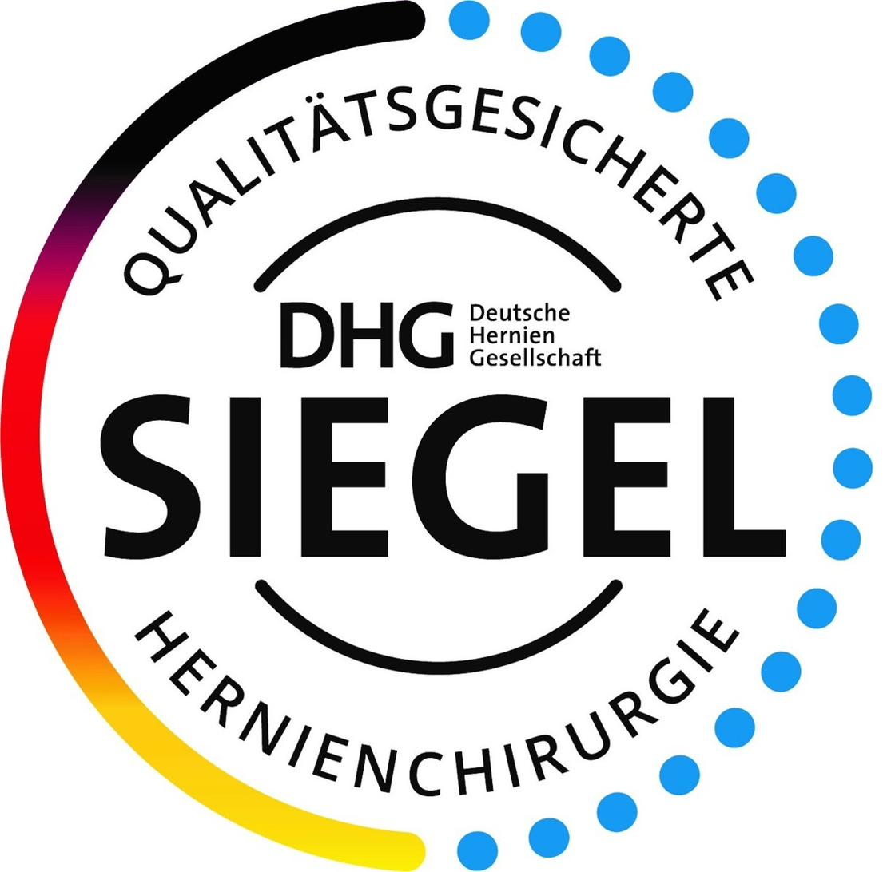

OC | OrthoChirurgie Ludwigshafen
Berthold-Schwarz-Str. 26
67063 Ludwigshafen
Mo–Fr geöffnet
Stellen Sie Ihre Frage in Alltagssprache – unser KI-Assistent durchsucht alle medizinischen Informationen und führt Sie direkt zur richtigen Antwort.


Facharzt für Allgemein- und Viszeralchirurgie
Als zertifizierter Hernienoperateur und Mitglied der Deutschen Herniengesellschaft (DHG) habe ich mich auf die operative Behandlung sämtlicher Hernienformen spezialisiert. In unserem zertifizierten Hernienzentrum verbinden wir modernste minimal-invasive Operationstechniken mit individueller Patientenversorgung.
Schwerpunkte meiner Tätigkeit liegen in der laparoskopischen Hernienchirurgie (TEP, TAPP, IPOM), in der Versorgung komplexer Narben- und Rezidivhernien sowie in nervenerhaltenden Operationstechniken zur Vermeidung chronischer Schmerzen.
Hernien können an verschiedenen Stellen der Bauchwand auftreten. Hier finden Sie eine Übersicht der häufigsten und seltensten Formen.
Übersichtlich nach Themen geordnet – auf der Basis aktueller Leitlinien und langjähriger klinischer Erfahrung.
Wir sind für Sie an zwei Praxisstandorten und in unseren Operationskliniken erreichbar.
Berthold-Schwarz-Str. 26
67063 Ludwigshafen
Mo–Fr geöffnet
Oggersheimer Straße 42
67112 Mutterstadt
Mo–Fr geöffnet
Ludwigshafen am Rhein
Ambulante Hernienchirurgie
Schwetzingen
Ambulante & stationäre Hernienchirurgie
Für nicht dringliche Anfragen, Befundübermittlung oder Rückfragen.

Scannen Sie den QR-Code, um zu unseren Praxisinformationen, Online-Terminen und Wegbeschreibung zu gelangen.
Überörtliche Berufsausübungsgemeinschaft für Chirurgie und Orthopädie (Gemeinschaftspraxis) in der Rechtsform der Gesellschaft bürgerlichen Rechts (GbR)
Dr. med. Tarek Osman, Solange Jöhnk, Irfan Halaceli und Dr. med. Jan-Henrik Dieckmann
Berthold-Schwarz-Str. 26, 67063 Ludwigshafen
Tel.: 0621 53399050 (LU) | 06234 9288500 (MU)
E-Mail: info@oc-orthochirurgie.com
Kassenärztliche Vereinigung Rheinland-Pfalz
Isaac-Fulda-Allee 14
55124 Mainz